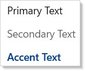
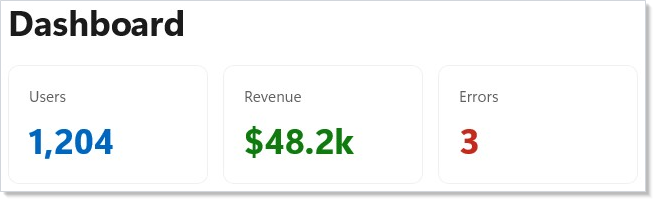
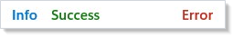
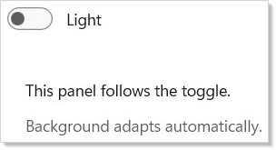
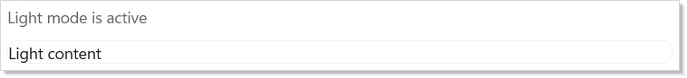
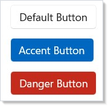

WinUI reference: For the full property surface and design guidance, see Style.
Styling in Microsoft.UI.Reactor (Reactor) is a layered modifier chain. The bottom layer is the
WinUI theme system — every visible color is ultimately a brush resource
that resolves against the effective Light / Dark / HighContrast
theme dictionary at render time. The next layer up is ThemeRef, a
record-struct reference to one of those resources by key. On top of that
sit two surfaces: typed accessors like Theme.Accent, Theme.AccentText,
Theme.CardBackground (canonical, autocompleted, refactor-safe) and
Theme.Ref("AnyResourceKey") for the long tail of WinUI brushes Reactor
doesn't surface as a property. Above the tokens are the modifier
shortcuts — .AccentButton(), .SubtleButton(), signal-severity
fluents — that bake a small named-style choice into one call. Above
those is lightweight styling via .Resources(r => r.Set(key, value)),
which overrides individual WinUI resource keys for a subtree without
replacing the control template. The whole stack is theme-aware by
default: tokens, modifier shortcuts, and Resource overrides all
re-resolve when the effective theme flips. The escape hatches are
literal hex strings ("#7B61FF") and direct .Set(control => ...)
property writes — both are theme-frozen by construction and are the
right tool only for brand colors that should stay constant regardless
of mode.
Styling and Theming¶
WinUI reference: For the underlying brush resources, the Fluent design language, and the full styling surface, see Design Windows apps overview on Microsoft Learn.
At-a-glance reference¶
| API | Layer | Use when |
|---|---|---|
Theme.Accent, Theme.PrimaryText, etc. |
Typed token | Always — these are the canonical brush references. |
Theme.Ref("AnyResourceKey") |
String token | The brush isn't surfaced as a typed accessor (rare). |
.Background(token) / .Foreground(token) |
Color modifier | Apply a token to any element. |
.Background("#RRGGBB") |
Color modifier | Brand colors that must stay constant across themes. |
.AccentButton(), .SubtleButton(), .TextLink() |
Named-style fluent | The four canonical button shapes. No .Resources needed. |
.Informational() / .Success() / .Warning() / .Error() |
Named-style fluent | InfoBar severity. |
.Resources(r => r.Set(key, value)) |
Lightweight styling | Override individual WinUI resource keys for a subtree. |
.RequestedTheme(ElementTheme.Dark) |
Region root | Pin a subtree to a specific scheme. |
UseColorScheme() / UseIsDarkTheme() |
Hook | Branch logic (not just colors) on the effective theme. |
.Set(control => control.Foreground = ...) |
Escape hatch | The control has a property neither tokens nor .Resources reach. |
Theme tokens¶
Apply a typed token with .Background() or .Foreground():
class ThemeTokensExample : Component
{
public override Element Render()
{
return VStack(12,
TextBlock("Primary Text").Foreground(Theme.PrimaryText),
TextBlock("Secondary Text").Foreground(Theme.SecondaryText),
TextBlock("Accent Text").Foreground(Theme.AccentText).SemiBold(),
TextBlock("On Accent Background")
.Foreground("#FFFFFF")
.Padding(horizontal: 8, vertical: 4)
.Background(Theme.Accent)
.CornerRadius(4)
).Padding(24);
}
}

Each token resolves to a WinUI brush at render time. When the user
switches between light and dark mode, every element bound to a ThemeRef
updates automatically — no manual rebinding. The full token catalog
with light/dark swatches lives in
theming-tokens.
Building cards¶
A card is a Border with Theme.CardBackground, rounded corners,
padding, and Theme.CardStroke. Combine those modifiers with
layout containers for reusable card shapes:
class CardLayoutExample : Component
{
public override Element Render()
{
return VStack(16,
Heading("Dashboard"),
HStack(12,
Card("Users", "1,204", Theme.Accent),
Card("Revenue", "$48.2k", Theme.SystemSuccess),
Card("Errors", "3", Theme.SystemCritical)
)
).Padding(24);
}
static Element Card(string title, string value, ThemeRef accent) =>
Border(
VStack(8,
Caption(title).Foreground(Theme.SecondaryText),
TextBlock(value).FontSize(28).Bold().Foreground(accent)
).Padding(16)
).Background(Theme.CardBackground)
.CornerRadius(8)
.WithBorder(Theme.CardStroke, 1)
.Width(160);
}

Theme.CardBackground is the standard WinUI card surface;
Theme.CardStroke is the matching border. Together they produce a card
that looks native in both light and dark mode.
Color modifiers¶
.Background() and .Foreground() accept three input shapes:
class ColorModifiersExample : Component
{
public override Element Render()
{
return VStack(8,
TextBlock("Theme token").Background(Theme.SubtleFill).Padding(8),
TextBlock("Hex string").Background("#E8F5E9").Padding(8),
TextBlock("Mixed").Foreground(Theme.PrimaryText)
.Background("#1E1E2E").Padding(8)
).Padding(24);
}
}
| Overload | Example | Theme-aware? |
|---|---|---|
| Typed token | .Background(Theme.Accent) |
yes |
Theme.Ref |
.Background(Theme.Ref("MyCustomBrush")) |
yes |
| Hex string | .Background("#FF5733") |
no — frozen |
Windows.UI.Color |
.Background(Colors.Blue) |
no — frozen |
Tokens are the right default. Reserve hex and Color for brand colors
that should stay constant regardless of mode.
Signal colors¶
Status indicators use semantic signal colors:
class SignalColorsExample : Component
{
public override Element Render()
{
return HStack(12,
Badge("Info", Theme.SystemAttention),
Badge("Success", Theme.SystemSuccess),
Badge("Warning", Theme.SystemCaution),
Badge("Error", Theme.SystemCritical)
).Padding(24);
}
static Element Badge(string label, ThemeRef color) =>
TextBlock(label)
.FontSize(12).SemiBold()
.Foreground(color)
.Padding(horizontal: 8, vertical: 4)
.Background(Theme.SubtleFill)
.CornerRadius(4);
}

Use these instead of hardcoded red/green/yellow — they meet
accessibility contrast requirements in both themes
and tone-shift correctly under HighContrast.
Caveat:
Theme.Ref("SomeResourceKey")resolves through string lookup at every render, walking the merged-dictionary chain to find the brush; the typed accessors (Theme.Accent,Theme.AccentText, …) construct the sameThemeRefrecord-struct with the canonical key string. The typed-accessor path is the supported one for two reasons: (1) renaming a WinUI resource is a compile error against typed accessors and a runtime null brush againstTheme.Ref— the latter silently falls through to the system default; (2) theREACTOR_THEME_001analyzer treats hex strings inside.Background(...)as warnings only when the hex matches a known token value, so.Background(Theme.Ref("Foo"))is invisible to the analyzer whenFoodoesn't exist as a typed accessor. The rule: if a typedTheme.Xexists, use it. ReserveTheme.Ref(...)for the long-tail brushes Reactor hasn't surfaced yet, and prefer filing a feature request to add the accessor over leaving a string reference in the codebase.
Dark and light mode¶
.RequestedTheme(ElementTheme.Dark) pins a subtree to a specific
theme. UseColorScheme() and UseIsDarkTheme() let you read the
effective theme reactively:
class DarkLightToggleExample : Component
{
public override Element Render()
{
var (isDark, setIsDark) = UseState(false);
var theme = isDark ? ElementTheme.Dark : ElementTheme.Light;
return VStack(16,
ToggleSwitch(isDark, setIsDark, onContent: "Dark", offContent: "Light"),
Border(
VStack(12,
TextBlock("This panel follows the toggle.").Foreground(Theme.PrimaryText),
TextBlock("Background adapts automatically.").Foreground(Theme.SecondaryText)
).Padding(16)
).Background(Theme.CardBackground)
.CornerRadius(8)
.RequestedTheme(theme)
).Padding(24);
}
}

.RequestedTheme(...) sets the property on the underlying
FrameworkElement. All ThemeRef bindings in descendants resolve
against the new scheme. UseIsDarkTheme() returns true when the
effective scheme is dark — branch on it when you need different
behavior (different icons, different layouts), not just different
colors.
Reactive theme hooks¶
UseColorScheme() returns the effective scheme at the component's
position in the tree. UseIsDarkTheme() is a convenience wrapper that
narrows it to a boolean:
class ColorSchemeHookExample : Component
{
public override Element Render()
{
var isDark = UseIsDarkTheme();
var scheme = UseColorScheme();
return VStack(12,
TextBlock($"Color scheme: {scheme}").FontSize(16).SemiBold(),
TextBlock(isDark ? "Dark mode is active" : "Light mode is active")
.Foreground(Theme.SecondaryText),
Border(
TextBlock(isDark ? "Dark content" : "Light content")
.Padding(12)
).Background(Theme.CardBackground)
.CornerRadius(8)
.WithBorder(Theme.CardStroke, 1)
).Padding(24);
}
}

ColorScheme has three values: Light, Dark, and HighContrast.
Use the hook when you need to branch logic (not just colors) on the
theme — choosing different icon assets, picking a different layout
density, or running different analytics tags.
Named-style fluents¶
Reactor exposes the canonical WinUI named styles as fluent shortcuts.
The common cases never need a .Resources(...) block:
class NamedStylesExample : Component
{
public override Element Render()
{
return VStack(12,
HStack(8,
Button("Save", () => { }).AccentButton(),
Button("Cancel", () => { }).SubtleButton(),
HyperlinkButton("Learn more", new Uri("https://example.com"))
.TextLink()
),
InfoBar(title: "Heads up", message: "Backups run nightly.")
.Informational(),
InfoBar(title: "Saved", message: "All changes are persisted.")
.Success(),
InfoBar(title: "Almost full", message: "75% of quota used.")
.Warning(),
InfoBar(title: "Sync failed", message: "Check your network.")
.Error()
).Padding(24);
}
}
| Fluent | Maps to |
|---|---|
.AccentButton() |
AccentButtonStyle — filled accent color |
.SubtleButton() |
SubtleButtonStyle — text-only until hovered |
.TextLink() |
Hyperlink-style button (no chrome) |
.Informational() |
InfoBarSeverity.Informational |
.Success() |
InfoBarSeverity.Success |
.Warning() |
InfoBarSeverity.Warning |
.Error() |
InfoBarSeverity.Error |
The button fluents also overload DropDownButton, SplitButton, and
ToggleSplitButton. Reach for these before .Resources(...) — they
avoid the six-key hover/pressed/disabled dance and stay in sync with
system theme updates. See
spec 039 §2.1, §2.2, and
§2.4 for the inventory.
Lightweight styling¶
.Resources(...) overrides WinUI control resource keys without
replacing the control template. VisualStateManager states (hover,
pressed, disabled) automatically respect your overrides:
class LightweightStylingExample : Component
{
public override Element Render()
{
return VStack(12,
Button("Default Button", () => { }),
Button("Accent Button", () => { })
.Resources(r => r
.Set("ButtonBackground", Theme.Accent)
.Set("ButtonBackgroundPointerOver", Theme.AccentSecondary)
.Set("ButtonBackgroundPressed", Theme.AccentTertiary)
.Set("ButtonForeground", "#FFFFFF")
.Set("ButtonForegroundPointerOver", "#FFFFFF")
.Set("ButtonForegroundPressed", "#FFFFFF")),
Button("Danger Button", () => { })
.Resources(r => r
.Set("ButtonBackground", Theme.SystemCritical)
.Set("ButtonBackgroundPointerOver", "#C42B1C")
.Set("ButtonForeground", "#FFFFFF")
.Set("ButtonForegroundPointerOver", "#FFFFFF"))
).Padding(24);
}
}

ResourceBuilder supports .Set(key, ThemeRef) for theme-reactive
overrides, .Set(key, string) for hex colors, .Set(key, double) for
numeric values, and .Set(key, CornerRadius) for corner radius.
Overrides cascade to child elements through WinUI's resource dictionary
hierarchy.
Custom resource access¶
For brushes Reactor hasn't surfaced as a typed property, Theme.Ref()
takes the WinUI resource key:
class CustomResourceExample : Component
{
public override Element Render()
{
return VStack(12,
TextBlock("Using a named WinUI resource:")
.Foreground(Theme.PrimaryText),
TextBlock("NavigationViewItemForeground")
.Foreground(Theme.Ref("NavigationViewItemForeground"))
).Padding(24);
}
}
The key must exist in WinUI's resource dictionaries. See the caveat above for why typed accessors are preferred when one exists.
Patterns¶
Light/dark adaptive UI¶
Most UI adapts automatically through tokens — the same code runs in
both themes because every color is a ThemeRef. The remaining 5% needs
branching: choosing different glyphs, switching to a darker
hero image, running a different background animation. That's where
UseIsDarkTheme() fits — branch on the hook, return different
elements. The full token catalog and swatch reference lives in
theming-tokens.
Brand color override at app root¶
A single .Resources(...) block at the app root re-skins every
descendant's accent. The override flows through every descendant that
resolves AccentFillColorDefaultBrush — buttons with .AccentButton(),
text with Theme.Accent, anywhere the brush is referenced:
// Brand color override at app root — every descendant that resolves
// AccentFillColorDefaultBrush picks up the brand color in both themes.
class BrandOverrideExample : Component
{
public override Element Render()
{
return VStack(12,
SubHeading("Brand color cascades through descendants"),
Button("Save", () => { }).AccentButton(),
TextBlock("Accented text").Foreground(Theme.AccentText).SemiBold()
).Padding(24)
// One Resources override at the root re-skins every descendant.
// Cross-theme: set in both ThemeDictionaries if light vs. dark
// should pick different brand hues.
.Resources(r => r
.Set("AccentFillColorDefaultBrush", "#7B61FF")
.Set("AccentTextFillColorPrimaryBrush", "#7B61FF"));
}
}
For full brand support, set the override in both light and dark theme
dictionaries — the values may need to be different hues to stay
legible. Pair with Theme.AccentText overrides if the brand contrast
differs from the system pair.
Per-element theme override scope¶
Pin one panel to a different scheme while the rest of the app follows
the system. The key is to apply .RequestedTheme(...) to the
region root — the container whose children should resolve against
the override — rather than to a leaf element:
// Per-element theme override scope — a single panel forced to Dark
// inside an otherwise Light app, without app-wide RequestedTheme.
class ScopedThemeOverrideExample : Component
{
public override Element Render()
{
return VStack(16,
SubHeading("Default scheme"),
Border(VStack(8,
TextBlock("Default scheme — follows the app theme.")
.Foreground(Theme.PrimaryText),
TextBlock("Card stroke and background also follow.")
.Foreground(Theme.SecondaryText)
).Padding(16)).Background(Theme.CardBackground)
.WithBorder(Theme.CardStroke, 1).CornerRadius(8),
SubHeading("Dark scope — bound to a region root"),
Border(VStack(8,
TextBlock("This subtree is always dark.")
.Foreground(Theme.PrimaryText),
TextBlock("ThemeRef descendants resolve against the override.")
.Foreground(Theme.SecondaryText)
).Padding(16)).Background(Theme.CardBackground)
.WithBorder(Theme.CardStroke, 1).CornerRadius(8)
// Region root carries the override — leaf-level overrides
// are the anti-pattern called out in Common Mistakes.
.RequestedTheme(ElementTheme.Dark)
).Padding(24);
}
}
The overridden subtree's ThemeRef resolutions walk up to the nearest
explicit RequestedTheme, so cards, buttons, and text inside the
region all pick up the dark scheme. This is the right shape for a
preview pane, a dark-mode-only video player, or a marketing surface
embedded in an otherwise-light app.
Common Mistakes¶
Hardcoded color literals where a token exists¶
The grey looks correct in light mode and washes out in dark mode.
Theme.SecondaryText is the right token — the brush resolves to the
right grey in both themes. The REACTOR_THEME_001 analyzer flags hex
literals that match a known token's resolved value with a code-fix to
the typed accessor.
Using Theme.Ref when a typed accessor exists¶
// Don't — works today, fragile to renames.
.Background(Theme.Ref("AccentFillColorDefaultBrush"))
// Do — refactor-safe and discoverable.
.Background(Theme.Accent)
The typed accessor produces the same ThemeRef record-struct as the
string lookup — at render time they're identical. The difference is at
authoring time: a renamed or removed WinUI resource fails at compile
time against the typed accessor and silently returns null (system
default) against Theme.Ref. See the caveat above for the full
rationale.
Setting RequestedTheme on a leaf element¶
// Don't — the leaf's theme override doesn't cascade because there are
// no descendants to receive it. The button's own brushes resolve, but
// the surrounding panel and any sibling controls do not.
Border(VStack(8,
Button("Click").RequestedTheme(ElementTheme.Dark), // leaf override
TextBlock("Caption") // unaffected
))
RequestedTheme is a FrameworkElement property that flows down
the visual tree. Apply it to the region root — the highest element
whose descendants should resolve against the override — not to a single
leaf. The right shape is the per-element scope pattern above.
Reaching for .Set for theme properties¶
// Don't — the modifier exists.
Button("Save", onSave).Set(c => c.RequestedTheme = ElementTheme.Dark);
The .RequestedTheme(...) modifier participates in property diffing —
the next render that removes the modifier walks the property back to
default. .Set is imperative and one-way; the next render won't undo
it. The REACTOR_THEME_003 analyzer catches this specific case with a
code-fix to the modifier. See advanced for the broader
.Set discussion.
Roslyn analyzers¶
| Analyzer | Severity | Flags |
|---|---|---|
REACTOR_THEME_001 |
Warning | Use ThemeRef instead of a hard-coded color string. |
REACTOR_THEME_002 |
Info | Consider lightweight styling for visual-state overrides. |
REACTOR_THEME_003 |
Info | RequestedTheme modifier available. |
REACTOR_THEME_004 |
Warning | Hard-coded Brush/Color object bypasses theme tokens. |
Each analyzer ships a code-fix that converts to the preferred pattern.
Enable them by referencing the Reactor.Analyzers project — they're on
by default in projects created from mur new.
Tips¶
Prefer typed tokens over Theme.Ref(string). Typed accessors are
compile-checked, refactor-safe, and discoverable in autocomplete.
Reserve Theme.Ref for the rare brush Reactor hasn't surfaced yet.
Apply .RequestedTheme() to region roots, not leaves. The override
flows down the visual tree, so a leaf override doesn't reach siblings.
The right shape is one RequestedTheme per scope, on the scope's
container.
Use .Resources() for control color overrides. Lightweight styling
preserves hover/pressed/disabled states. .Set forces a single value
and breaks those states.
Use UseIsDarkTheme() for conditional logic. When you need
different behavior based on theme (different icons, different
layouts), read the hook instead of inspecting resources manually.
Test in both themes. Run your app, switch Windows to dark mode, and verify nothing becomes unreadable. The token system handles this if you avoid hardcoded colors — the analyzer catches the obvious omissions.
Next Steps¶
- Theming tokens — Next: full token catalog with light/dark swatches
- Layout — VStack, HStack, Grid, and core containers for the surfaces you're styling
- Flex Layout — flex containers for adaptive alignment and wrap
- Accessibility — ensure themed colors meet WCAG contrast in both schemes
- Animation — pair theme-aware brushes with transitions and
.InteractionStates(...) - Components — compose styled elements into reusable function or class components
- Advanced —
.Setescape hatch and the analyzer rules that catch its misuse